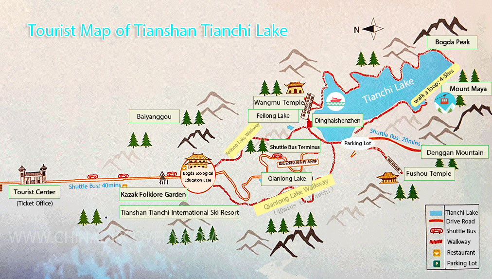

Tianchi Lake
Located about 68 km east of Urumqi, Tianchi, or
Tianchi Lake, Tianshan Tianchi Lake or some people prefer to
call it Heavenly Lake of Tianshan Mountains, is a top-rated
attraction and one of the landmarks of Xinjiang, a half-moon alpine lake
on the north side of Bogda Peak of Tianshan Mountains, a national key
scenic sport (AAAAA) and a UNSCO World Natural Heritage property with
unique, valuable natural resources and rich, distinctive humanistic
connotation.


Information
Type: World Natural Heritage Site, Bodies of Water, Points of
Interest, Landmarks, Lookouts, Nature & Parks, Mountains.
What you should know when travelling:
- Best Time to Visit: May ~ October
-
Recommended Visiting Time: Half a day-one day
-
Open Hours: 08:30 ~ 20:00 (April~October); 09:30 ~ 19:00
(November~March Next Year)
-
Tickets: ¥95/person (April~October); ¥45/person (November~March
Next Year); shuttle bus: ¥60/person (round-trip)
-
Address: Fukang City, Changji Hui Autonomous Prefecture, Xinjiang

Highlights to Explore in Tianshan Tianchi Lake Scenic Area
Covering an area of 548 square kilometers,
The Eight Sights of Tianchi Lake are the most-known and best
scenery to explore within the park.
The Tianshan Tianchi Lake consists of 8 scenic areas:
- Tianchi Lake
- Denggan Mountain
- Mount Maya
- Bogda Peak
- Baiyanggou
- Huaer Ditch
- Shuimogou and North Desert
- The Northern Desert Scenic Area
For More
Tianshan Tianchi is a quintessential attraction in Xinjiang. The
lake is surrounded by snow-capped mountains that are covered with tall,
upright, verdant spruces and pine trees, and has sapphire-like serene
waters reflecting the grandiose Bogda Peak. This fairyland, said to be the
residence of Queen Mother of the West, now is most known as the Heavenly
Lake for its wonderful scenery and mythological significance.
Why Tianchi Lake of Tianshan Mountains so famous:
-
Outstanding Natural Landscape: Tianchi Lake Scenic Area owns four
vertical natural landscape zones, exhibiting a variety of natural
scenery. Visitors can enjoy peaceful mountain lake, snow-covered peaks,
alpine meadow, giant glaciers, primitive forests, steep valley,
greenish-blue ponds, old trees and many cultural relics and historical
sites among them.
-
Unique Chinese Cultural Charms: Tianchi Lake of Tianshan
Mountains has kept many ancient Taoist architectures and folk stories
relate to China’s famous mythology of the Queen Mother of the West. This
place still witnessed special Kazak folk culture and other regional
ethnic cultures along the ancient Silk Road together with the nomadic
history, like the past burial system and rocking painting art. Massive
poems, calligraphy and paintings of the celebrities add more aura of
Tianchi Lake.
-
World Top-Level Natural Values: Between the 5445-meter-high Bogda
Peak and the 500-meter desert of the scenic area, a complete geological
evolutionary structure formed several billions years ago has been
well-preserved as the only example in Central Asia and a rare case in
the world. Tianchi Lake with an elevation of 1,910 meters is one of the
world’s oldest alpine moraine lakes. Besides, the rock paintings in the
Bogda Peak are around 3,000 years old, the volcanic rocks forest in
Mount Maya scenic spot is scarce throughout the world and the fossils of
the Ankylosaurus and Lystrosaurus have a great scientific value.


Back to city page